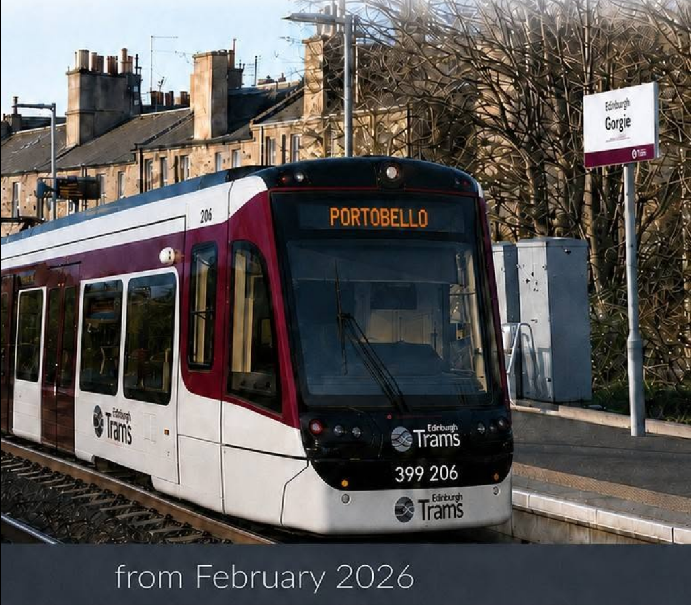
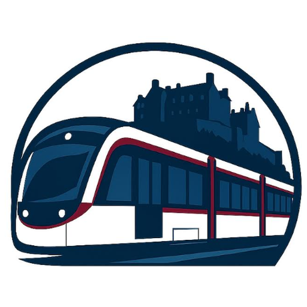

Tram Trains
for Edinburgh
Open to the public
Tram-trains
for Gorgie
Reopen the South Sub
Come and hear how reopening this Victorian railway could make travel across Edinburgh faster and easier — and why the scheme matters for Gorgie.
- When
- Tuesday 1 September 7.30pm–9pm · doors 7.15pm
- Where
- St Bride’s, Gorgie Community Centre café
10 Orwell Terrace, Edinburgh EH11 2DZA short walk from Dalry and Gorgie Road
Scan to book a free place
Places are free. Please reserve on Eventbrite so we know how many seats to set out.